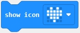

<script>
    // Switch layout to put mobile controller on the view screen as a sidebar
    window.cotinkerConfig.sidebarController = true;
    window.cotinkerConfig.hideSendNote = true;
    window.cotinkerConfig.disableCollaboration = true;
    window.cotinkerConfig.disableNotifications = true;

    WPMv2.require("cotinker-unity");
</script>

<inline src="templates.html"></inline>

<link href="assignment.css" type="text/css" rel="stylesheet" />
<script src="assignment.js" type="application/javascript"></script>

<assignment>
    <steps>
        <step name="intro" data-slide="welcome">
            <h1>Intro</h1>
            <div class="activity-flex">
                <p>Originates from the idea of having a common page that shows sensor data. Could you make something more fun and engaging?</p>
                <p>The purpose of this exercise is to program a micro:bit to be a game controller, where both buttons and the accelerometer can be used.</p>
                <p>The game allows you to assume three different roles and all three roles are necessary to collect all points.</p>
                <p>Click "Next" when you are ready to begin</p>
            </div>
        </step>
        <step name="micro:bit connect" data-description="" data-slide="programming" data-slide-mode="program1">
            <h1>Connect the micro:bit</h1>
            <div class="activity-flex">
                <p>Watch the video below, describing how the micro:bit is connected via USB to a computer and how a program is transferred from the computer to the micro:bit.</p>
                <iframe width="560" height="315" src="https://www.youtube.com/embed/qSjMDG84bMY?enablejsapi=1" title="YouTube video player" frameborder="0" allow="accelerometer; autoplay; clipboard-write; encrypted-media; gyroscope; picture-in-picture" allowfullscreen allowscriptaccess="always"></iframe>
                <p>Try to transfer the program to your micro:bit</p>
            </div>
            <code-fragment data-type="text/javascript">
                onStepUnloaded(()=>{
                    fragmentSelfReference.html[0].closest("step").querySelectorAll("iframe").forEach((iframe)=>{
                        iframe.contentWindow.postMessage('{"event":"command","func":"stopVideo","args":""}', '*');
                    });
                });
            </code-fragment>
        </step>
        <step name="micro:bit makecode intro 1/3" data-slide="programming" data-slide-mode="program1">
            <h1>micro:bit categories</h1>
            <div class="activity-flex">
                <p>In makecode the code consists of programming blocks</p>
                <p>The blocks are sorted inside different categories:</p>
                
            </div>
        </step>
        <step name="micro:bit makecode intro 2/3" data-slide="programming" data-slide-mode="program1">
            <h1>micro:bit blocks</h1>
            <div class="activity-flex">
                <p>The following blocks are all from the "Basic" category</p>
                
                <p>"on start" runs the code blocks once, when the micro:bit turns on</p>
                
                <p>"forever" runs the code blocks in a loop, as fast as the micro:bit can manage</p>
                
                <p>"show icon" shows the selected icon when the block is run</p>
            </div>
        </step>
        <step name="micro:bit makecode intro 3/3" data-slide="programming" data-slide-mode="program1">
            <h1>micro:bit input</h1>
            <div class="activity-flex">
                <p>Try and change the program, so that a different icon is shown when a button is pressed.</p>
                <p>Hint, look for this block under "Input"</p>
                
            </div>
        </step>
        <step name="micro:bit controller" data-slide="programming" data-slide-mode="unityProgram1">
            <h1>micro:bit controller</h1>
            <div class="activity-flex">
                <p>Now we are ready to try and build a game controller for the game.</p>
                <p>The category "Unity" has all the blocks directly related to creating a game controller.</p>
                <p>Try and build a controller program, and download it to the micro:bit</p>
                <p>When you have downloaded your controller program to the micro:bit, press the  button to connect and start playing!</p>
            </div>
        </step>
    </steps>
    <slides>
        <slide id="welcome">
            
        </slide>
        <slide id="programming">
            <code-fragment data-type="text/javascript" name="MakeCode setup">
                console.log("AHA!");
                if (window.makeController == null) {
                    await WPMv2.require(["cotinker-pxt-microbit"]);

                    let transient = document.createElement("transient");
                    transient.classList.add("makecode-view");
                    slideReference.appendChild(transient);
                    let makeController = new MakeController(transient);
                    window.makeController = makeController;
                }
            </code-fragment>

            <code-fragment data-type="text/javascript">
                setupResetButton();

                onSlideUnloaded(()=>{
                    cQuery(".resetButton").remove();
                });
            </code-fragment>

            <code-fragment id="program1" data-type="application/json" class="cotinker-noauto" data-restrict="program1">{
                "header": {
                "name": "Ikke-navngivet",
                "meta": {
                "caviId": "program1"
                },
                "editor": "blocksprj",
                "pubId": "",
                "pubCurrent": false,
                "target": "microbit",
                "targetVersion": "5.0.15",
                "id": "d220fa59-2f83-48a0-4dc1-737428cc5f0d",
                "recentUse": 1675240738,
                "modificationTime": 1675240738,
                "path": "Ikke-navngivet-6",
                "cloudCurrent": false,
                "saveId": null,
                "githubCurrent": false
                },
                "text": {
                "README.md": "",
                "main.blocks": "<xml xmlns=\"https://developers.google.com/blockly/xml\"><block type=\"pxt-on-start\" x=\"1\" y=\"0\"><statement name=\"HANDLER\"><block type=\"basic_show_icon\"><field name=\"i\">IconNames.Yes</field></block></statement></block><block type=\"device_forever\" x=\"0\" y=\"164\"/></xml>",
                "main.ts": "basic.showIcon(IconNames.Yes)\nbasic.forever(function () {\n\t\n})\n",
                "pxt.json": "{\n    \"name\": \"Ikke-navngivet\",\n    \"description\": \"\",\n    \"dependencies\": {\n        \"core\": \"*\",\n        \"microphone\": \"*\",\n        \"bluetooth\": \"*\"\n    },\n    \"files\": [\n        \"main.blocks\",\n        \"main.ts\",\n        \"README.md\"\n    ],\n    \"preferredEditor\": \"blocksprj\",\n    \"yotta\": {\n        \"config\": {\n            \"microbit-dal\": {\n                \"bluetooth\": {\n                    \"open\": 1,\n                    \"whitelist\": 0,\n                    \"security_level\": null\n                }\n            }\n        }\n    }\n}\n",
                ".simstate.json": "{}"
                }
                }</code-fragment>

            <code-fragment id="unityProgram1" data-type="application/json" class="cotinker-noauto" data-restrict="unityProgram1">{
                "header": {
                "name": "Ikke-navngivet",
                "meta": {
                "caviId": "unityProgram1"
                },
                "editor": "blocksprj",
                "pubId": "",
                "pubCurrent": false,
                "target": "microbit",
                "targetVersion": "5.0.15",
                "id": "ef1cf965-0bdf-48e9-695d-1161bcdb0c15",
                "recentUse": 1675260188,
                "modificationTime": 1675260188,
                "path": "Ikke-navngivet-2",
                "cloudCurrent": false,
                "saveId": null,
                "githubCurrent": false
                },
                "text": {
                "README.md": "",
                "main.blocks": "<xml xmlns=\"https://developers.google.com/blockly/xml\"><block type=\"pxt-on-start\" x=\"2\" y=\"0\"/><block type=\"device_forever\" x=\"0\" y=\"125\"/></xml>",
                "main.ts": "basic.forever(function () {\n\t\n})\n",
                "pxt.json": "{\n    \"name\": \"Ikke-navngivet\",\n    \"description\": \"\",\n    \"dependencies\": {\n        \"core\": \"*\",\n        \"microphone\": \"*\",\n        \"bluetooth\": \"*\"\n    },\n    \"files\": [\n        \"main.blocks\",\n        \"main.ts\",\n        \"README.md\",\n        \"custom.ts\",\n        \"unity.ts\"\n    ],\n    \"preferredEditor\": \"blocksprj\",\n    \"yotta\": {\n        \"config\": {\n            \"microbit-dal\": {\n                \"bluetooth\": {\n                    \"open\": 1,\n                    \"whitelist\": 0,\n                    \"security_level\": null\n                }\n            }\n        }\n    }\n}\n",
                ".simstate.json": "{}",
                "custom.ts": "enum SensorEnum {\n    //% block=\"sound level\"\n    //% block.loc.da=\"lydniveau\"\n    Sound,\n    //% block=\"light level\"\n    //% block.loc.da=\"lysniveau\"\n    Light,\n    //% block=\"temperature\"\n    //% block.loc.da=\"temperatur\"\n    Temperature,\n    //% block=\"compas direction\"\n    //% block.loc.da=\"kompas retning\"\n    Compas,\n    //% block=\"acceleration\"\n    //% block.loc.da=\"acceleration\"\n    Accel,\n    //% block=\"magnetic strength\"\n    //% block.loc.da=\"magnetisk styrke\"\n    Magnetic,\n    //% block=\"rotation\"\n    //% block.loc.da=\"rotation\"\n    Rotation,\n}\n\n/**\n * Custom blocks\n */\n//% weight=100 color=#0fbc11 icon=\"\"\n//% block=\"Publish\"\n//% block.loc.da=\"Publicer\"\nnamespace publish {\n    /**\n     * Publishes a sensor value via BlueTooth\n     * @param s The sensor to publish\n     */\n    //% block=\"publish sensor $s\"\n    //% block.loc.da=\"udgiv sensor $s\"\n    //% jsdoc.loc.da=\"Udgiv en sensor værdi over BlueTooth\"\n    //% s.loc.da=\"Sensoren der skal udgives\"\n    export function publishSensor(s: SensorEnum): void {\n        let btMsg = null;\n\n        switch (s) {\n            case SensorEnum.Accel: {\n                let x = input.acceleration(Dimension.X);\n                let y = input.acceleration(Dimension.Y);\n                let z = input.acceleration(Dimension.Z);\n\n                btMsg = \"a:\" + x + \":\" + y + \":\" + z;\n\n                break;\n            }\n            case SensorEnum.Sound: {\n                let level = input.soundLevel();\n\n                btMsg = \"s:\" + level;\n\n                break;\n            }\n            case SensorEnum.Light: {\n                let level = input.lightLevel();\n\n                btMsg = \"l:\" + level;\n\n                break;\n            }\n            case SensorEnum.Temperature: {\n                let level = input.temperature();\n\n                btMsg = \"t:\" + level;\n\n                break;\n            }\n            case SensorEnum.Magnetic: {\n                let x = input.magneticForce(Dimension.X);\n                let y = input.magneticForce(Dimension.Y);\n\n                btMsg = \"m:\" + x + \":\" + y;\n\n                break;\n            }\n            case SensorEnum.Compas: {\n                let heading = input.compassHeading();\n\n                btMsg = \"c:\" + heading;\n\n                break;\n            }\n            case SensorEnum.Rotation: {\n                let pitch = input.rotation(Rotation.Pitch);\n                let roll = input.rotation(Rotation.Roll);\n\n                btMsg = \"r:\" + pitch + \":\" + roll;\n\n                break;\n            }\n        }\n\n        if (btMsg != null) {\n            sendMessage(btMsg);\n        }\n    }\n\n    /**\n     * Publishes a value via BlueTooth\n     * @param v The value to publish\n     */\n    //% block=\"publish value $v\"\n    //% block.loc.da=\"publicer værdi $v\"\n    //% jsdoc.loc.da=\"Udgiv en værdi over BlueTooth\"\n    //% v.loc.da=\"Værdien der skal udgives\"\n    export function publishValue(v: number): void {\n        let btMsg = \"v:\" + v;\n\n        if (btMsg != null) {\n            sendMessage(btMsg);\n        }\n    }\n\n    /**\n     *\n     * @param address\n     * @param values\n     */\n    //%block=\"send to unity OscAddress: $address Values: $values\"\n    export function sendToUnity(address: string, values: number[]) {\n        let btMsg = \"u:\" + address;\n\n        values.forEach((v) => {\n            btMsg = btMsg + \":\" + v;\n        });\n\n        sendMessage(btMsg);\n    }\n\n    //Support 100 messages at a time, to prevent threading to mess up fragments\n    let msgId = 0;\n\n    function sendMessage(payload: string) {\n        let idString = \"\" + msgId;\n        msgId = (msgId + 1) % 100;\n\n        if (idString.length < 2) {\n            idString = \"0\" + idString;\n        }\n        let header = idString;\n\n        //Full Message form ^msgId:payload$\n\n        /**\n         * Parts:\n         * ^01something\n         * 01someMoreThing\n         * 01theLastThing$\n         */\n\n        // The +2 is for $ and ^\n        let headerLength = header.length + 2;\n\n        let maxFragmentSize = 20 - headerLength;\n\n        let first = true;\n\n        while (payload.length > 0) {\n            //Get as much of the payload as we can fit\n            let fragment = payload.slice(0, maxFragmentSize);\n\n            //Construct the bt message\n            let btMsg = header + fragment;\n\n            //Reduce the payload we still need to send\n            payload = payload.slice(maxFragmentSize);\n\n            if (payload.length == 0) {\n                btMsg += \"$\";\n            }\n\n            if (first) {\n                first = false;\n                btMsg = \"^\" + btMsg;\n            }\n\n            bluetooth.uartWriteLine(btMsg);\n        }\n    }\n\n    bluetooth.startUartService();\n}\n",
                "unity.ts": "enum PlayerType {\n    Ball = 1,\n    Drone = 2,\n    Light = 3\n}\n\nenum AccelerometerAxis {\n    X,\n    Y,\n    Z\n}\n\n//% icon=\"\\uf466\" color=\"#FFD700\" weight=100\nnamespace Unity {\n\n    export function playerType(player: PlayerType) {\n        return player;\n    }\n\n    /**\n     *\n     * @param force_x\n     * @param force_z\n     */\n    //% block=\"Move the player. Horizontal: $force_x Vertical: $force_z\"\n    export function move(force_x: number, force_z: number) {\n        publish.sendToUnity(\"/addForce\", [force_x, force_z]);\n        //publish.sendToUnity(\"/addForce\", [Math.map(input.acceleration(Dimension.X), 0, 1023, 0, force_x), Math.map(input.acceleration(Dimension.Y) * -1, 0, 1023, 0, force_z)]);\n    }\n\n    /**\n     * Return the current acceleration on the selected axis mapped between 0 and speed\n     * @param axis\n     * @param speed\n     */\n    //% block=\"Accelerometer. Axis: $axis Speed: $speed\"\n    export function acceleration(axis: AccelerometerAxis, speed: number) {\n        switch (axis) {\n            case AccelerometerAxis.X: return Math.map(input.acceleration(Dimension.X), 0, 1023, 0, speed);\n            case AccelerometerAxis.Y: return Math.map(input.acceleration(Dimension.Y) * -1, 0, 1023, 0, speed);\n            case AccelerometerAxis.Z: return Math.map(input.acceleration(Dimension.Z), 0, 1023, 0, speed);\n        }\n        return 0;\n    }\n\n    /**\n     * Return the current light level mapped between -speed and speed\n     * @param speed\n     */\n    //% block=\"Light level. Speed: $speed\"\n    export function lightLevel(speed: number) {\n        return Math.map(input.lightLevel(), 0, 256, -speed, speed);\n    }\n\n    /**\n     * Return the current audio level mapped between 0 and 1\n     */\n    //% block\n    export function audioLevel() {\n        return Math.map(input.soundLevel(), 0, 255, 0, 1);\n    }\n\n    /**\n     * Makes the player jump if the player type is 'Ball'\n     */\n    //% block\n    //% force_y.defl=250 force_y.min=0 force_y.max=500\n    export function jump(force_y: number) {\n        publish.sendToUnity(\"/jump\", [force_y]);\n    }\n\n    /**\n     * Makes the player shoot if the player type is either 'Drone' og 'Ball'\n     */\n    //% block=\"Shoot\"\n    export function shoot() {\n        publish.sendToUnity(\"/shoot\", []);\n    }\n\n    /**\n     * Creates the player in the game\n     */\n    //% block\n    export function createPlayer(playerType: PlayerType) {\n        publish.sendToUnity(\"/destroy\", []);\n        pause(100);\n        publish.sendToUnity(\"/create\", [playerType]);\n    }\n}\n"
                }
                }</code-fragment>

            <code-fragment data-type="text/javascript" data-slide-mode="program1">
                const codeFragment = Fragment.one("#program1");
                await makeController.linkFragment(codeFragment, {});

                await makeController.stopSimulator();
                await makeController.hideSimulator();
            </code-fragment>

            <code-fragment data-type="text/javascript" data-slide-mode="unityProgram1">
                const codeFragment = Fragment.one("#unityProgram1");
                await makeController.linkFragment(codeFragment, {});

                await makeController.stopSimulator();
                await makeController.hideSimulator();
            </code-fragment>
        </slide>
    </slides>
</assignment>
